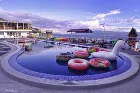
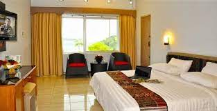
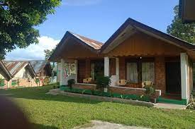
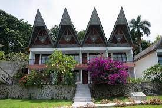

1. Bagus Bay Guest House
Bagus Bay Homestay menawarkan akomodasi dengan area tempat duduk di Tuk Tuk. Guest house ini menyediakan parkir pribadi gratis, keamanan sepanjang hari, dan Wi-Fi gratis. Akomodasi ini menyediakan kamar keluarga dan teras. Setiap unit di guest house ini dilengkapi dengan seprai dan handuk. Anda dapat bersantap di restoran hotel yang ramah keluarga, yang buka untuk makan malam, brunch, dan koktail. Anda dapat bermain biliar di guest house. Anda juga dapat bersantai di taman.
2.Juma Cottages
Juma cottage adalah sebuah guest house ramah lingkungan yang terletak di Tuk Tuk, dan memiliki taman. Terdapat restoran di tempat dan parkir pribadi gratis. Di guest house, unit-unitnya dilengkapi dengan balkon. Unit-unitnya dilengkapi dengan kamar mandi pribadi dan teko, sementara beberapa kamar dilengkapi dengan teras dan yang lainnya juga memiliki pemandangan pegunungan. Nikmati liburan Anda dengan orang tercinta bersama Juma Cottages.

3. My Nasha Tigaras
Nasha Tigaras simalungun saya terletak di daerah Tigaras-Simalungun. Terdapat beberapa tempat menarik di sekitarnya, seperti bukit indah Simarjarunjung yang berjarak sekitar 1,38 km. Nasha Tigaras saya adalah tempat menginap sempurna yang menyediakan fasilitas layak serta layanan hebat. Meja depan 24 jam tersedia untuk melayani Anda, mulai dari check-in hingga check-out, atau bantuan apa pun yang Anda perlukan.Nasha Tigaras saya adalah pilihan ideal bagi Anda yang mencari kenyamanan.
4.Darma Agung Beach Hotel
Darma Agung Beach Hotel, mewarkan berbagai fasilitas dan kenyamanan. Kamar tamu menawarkan fasilitas seperti kulkas, dan tamu dapat terhubung dengan internet menggunakan akses internet yang ditawarkan oleh hotel. Darma Agung Beach Hotel menawarkan layanan kamar dan layanan concierge, sehingga pengalaman menginap Anda lebih menyenangkan. Properti ini juga menawarkan restoran di tempat. Jika Anda suka makanan Asia, Darma Agung Beach Hotel terletak dekat Restoran Istana Minang, LaToSu Cafe & Resto, dan WinTie Coffee Shop. Staf di Darma Agung Beach Hotel berharap dapat melayani Anda selama kunjungan Anda mendatang.

5. Patra Comfort Parapat
Patra Comfort Parapat adalah pilihan terbaik bagi wisatawan yang mengunjungi Parapat, menawarkan banyak fasilitas berguna yang dirancang untuk menyempurnakan pengalaman menginap Anda. Wi-fi gratis ditawarkan untuk para tamu, dan kamar di Patra Comfort Parapat memiliki penyejuk udara dan meja. Selama Anda menginap, gunakan fasilitas yang ditawarkan, seperti layanan kamar, layanan concierge, dan teras terbuka. Tamu Patra Comfort Parapat juga dapat menikmati kolam renang dan restoran di properti. Bagi wisatawan yang datang dengan mobil, tersedia parkir gratis. Jika Anda suka makanan cina, Patra Comfort Parapat terletak dekat LaToSu Cafe & Resto. Nikmati masa menginap Anda di Parapat.

6.OYO 2379 Hotel Sibigo
Lakukan perjalanan terbaik Anda ke Samosir dengan standar Sanitized Stays yang dijanjikan, dan nikmati Wi-Fi gratis di semua kamar. Berlokasi strategis di Samosir bagian Barat Samosir, yang menempatkan Anda dekat dengan atraksi dan pilihan tempat makan yang menarik. Bonus tambahan, restoran disediakan di lokasi untuk melayani kebutuhan Anda. Terletak di tepi Danau Toba, hotel ini cukup baik dengan pemandangan danau toba yang indah. Kamarnya tergolong bersih dan harga kamarnya tergolong sangat murah dan sudah termasuk sarapan Nasi Goreng.

7. Toledo Inn
Toledo Inn memiliki taman, teras, restoran, dan bar di Tuk Tuk. Wi-Fi gratis dan layanan kamar juga disediakan. Setiap kamar di hotel ini dilengkapi dengan lemari pakaian. Setiap kamar memiliki kamar mandi pribadi dengan shower, sementara kamar-kamar tertentu memiliki balkon dan yang lainnya juga menampilkan pemandangan pegunungan. Di Toledo Inn, kamar-kamarnya mencakup meja dan TV layar datar. Pilihan sarapan Asia dan halal tersedia setiap hari di akomodasi. Bandara terdekat adalah Bandara Internasional Sisingamangaraja XII, 130 km dari Toledo Inn.
8. Tabo Cottages Tuktuk Lake Toba
Tabo Cottages adalah hotel yang natural dengan pekarangan hijau yang luas dan kamar sebahagian dari bahan daur ulang dari rumah tradisional. Terdapat pondok untuk santai dan menikmati pemandangan danau dan gunung, Restoran dan bakery jerman . Makanan spesial adalah prasmanan dengan khas lokal dan barat. Kopi adalah salah satu produk yang sangat kami banggakan karena kami memanggang biji kopi lokal sendiri, maka kopi di Tabo sangat segar dan harum. Sering juga kami adakan aksi linkungan bersama tamu2 dan coba memperbaiki linkungan dan fasilitas seperti jalur treking secara relawan.